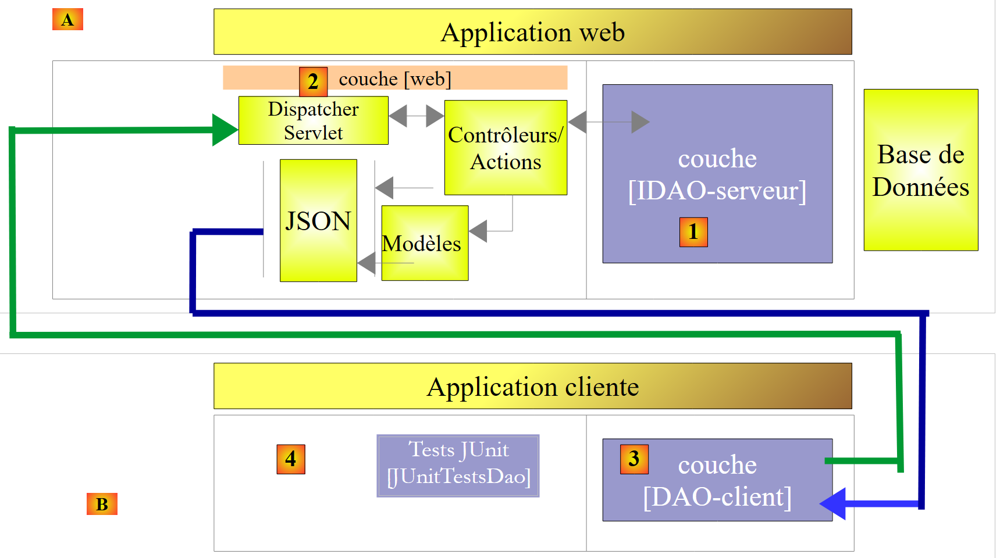

1. Introduction
1.1. Contenu
Nous nous proposons dans ce document d'étudier différentes configurations d'exploitation d'une base de données. Considérons l'architecture en couches suivante :
 |
Le flux d'exécution va de la gauche vers la droite :
- c'est l'une des classes de la couche [ui] (Use Interface) qui est exécutée en premier. Elle va instancier les couches [metier] et [dao]. Si la couche [ui] est une interface graphique, elle attend ensuite les actions de l'utilisateur. Une action de celui-ci peut provoquer l'exécution de méthodes dans toutes les couches de l'architecture jusqu'à la base de données. Le résultat de ces exécutions est rendu à l'utilisateur sous une forme ou une autre ;
Le rôle des différentes couches pourrait être celui-ci :
- la couche [JDBC] (Java DataBase Connectivity) est une interface d'accès universelle aux bases de données. Elle présente toujours la même interface à la couche [DAO]. Si on change de SGBD, il suffit de changer le pilote JDBC. La couche [DAO] ne change pas si on a pris soin de respecter un certain nombre de règles. Il est cependant difficile d'assurer une portabilité à 100% entre SGBD car ceux-ci ont souvent une part importante de SQL propriétaire qu'il est difficile d'ignorer car il amène souvent des gains de performance. Dès qu'on utilise du SQL propriétaire, la portabilité entre SGBD n'est plus possible. Par ailleurs, les SGBD ont souvent des politiques différentes de génération automatique de clés primaires, des mots réservés qui ne sont pas les mêmes ici ou là. Dans ce document, on a quand même réussi à porter l'architecture JDBC étudiée, sur six SGBD différents en acceptant qu'il y ait un projet de configuration pour chacun d'eux ;
- la couche [DAO] expose une interface d'accès aux données de la base de données particulière utilisée (à différencier de l'interface JDBC qui expose des méthodes valables pour tout SGBD) ;
- la couche [métier] implémente les règles de gestion ou règles métier de l'application.
- elle a pour données d'entrée, celles provenant de la base de données via la couche [dao] et / ou celles de l'utilisateur que lui transmet la couche [ui] ;
- elle produit des données qu'elle peut sauvegarder en base via la couche [dao] et / ou rendre à la couche [ui] qui l'a interrogée, pour affichage à l'utilisateur ;
- la couche [ui] est la couche qui exécute les actions de l'utilisateur et lui rend les résultats de celles-ci ;
Ci-dessus, la couche [DAO] envoie des requêtes SQL à la couche [JDBC] pour exécution dans le SGBD. Depuis quelques années (2006) cette architecture peut évoluer de la façon suivante :
 |
C'est désormais la couche JPA (Java Persistence API) qui émet des requêtes SQL vers la couche JDBC et en reçoit les résultats. La couche [JPA] présente à la couche [DAO] des opérations pour persister / modifier / supprimer / obtenir des objets. La couche [DAO] n'émet plus d'ordres SQL. Cette approche est davantage portable car les implémentations JPA gèrent les différences entre SGBD mais elle est plus lente que la technologie JDBC. Nous ferons des tests de performance pour le montrer. La technologie JPA formalise le travail fait par le framework Hibernate [http://hibernate.org/] des années auparavant.
Nous étudierons deux couches [DAO] avec l'une des deux architectures suivantes :
 |
 |
On imposera aux couches [DAO1] et [DAO2] d'implémenter la même interface [IDAO]. Aussi le test [JUnitTestsDao] sera le même pour les deux configuration et nous permettra de comparer les performances. La couche [DAO1] sera implémentée avec Spring JDBC et la couche [DAO2] avec Spring JPA ;
Ceci fait, nous exposerons l'interface [IDAO] sur le web de la façon suivante :
 |
- en [1], la couche [IDAO] est exposée sur le web au travers d'une couche web [2] implémentée par Spring MVC. C'est bien l'interface [IDAO] qui est exposée et nous construirons deux versions du service web selon que cette interface est implémentée avec une architecture [DAO-JDBC] ou [DAO-JPA-JDBC] ;
- en [B], un client distant utilise les URL exposées par le service web et qui donnent accès aux méthodes de la couche [IDAO-serveur]. On fera en sorte que la couche [DAO-Client] [3] implémente l'interface [IDAO-serveur] [1]. Ceci nous permettra d'utiliser le même test [JUnitTestsDao] déjà utilisé deux fois [4] ;
- en [3], la couche [DAO-client] sera implémentée avec Spring RestTemplate ;
Ceci fait, nous sécuriserons l'accès au service web :
 |
- en [5], la requête HTTP du client traverse une couche d'authentification implémentée avec Spring Security ;
Ceci fait, nous ferons évoluer l'architecture précédente vers la suivante :
 |
- en [3], l'application client est elle-même une application web. Celle-ci présentera un formulaire [5] permettant d'interroger les URL du service web sécurisé. Les accès HTTP au service web sécurisé se feront grâce à une couche [DAO-client-js] implémentée en Javascript. Cette architecture met en oeuvre ce qu'on appelle des requêtes inter-domaines :
- le service web [2] présente des URL de la forme [http://machine1:port1/] ;
- l'application web cliente [3] est téléchargée à partir d'une URL [http://machine2:port2/]. Si [http://machine2:port2/] n'est pas identique à [http://machine1:port1/] (même machine, même port), alors le navigateur client bloquera les appels HTTP de la couche [DAO-client-js]. Pour remédier à ce problème, le service web doit autoriser les requêtes inter-domaines. Nous verrons comment ;
Les projets présentés ont été testés avec les six SGBD suivants :
- MySQL 5 Community Edition ;
- SQL Server 2014 Express ;
- PostgreSQL 9.4 ;
- Oracle Express 11g release 2 ;
- IBM DB2 Express-C 10.5 ;
- Firebird 2.5.4 ;
Pour chacun de ces SGBD, on a développé quatre couches [DAO] différentes :
- une couche implémentée avec Spring JDBC ;
- une couche implémentée avec Spring JPA et le fournisseur JPA Hibernate ;
- une couche implémentée avec Spring JPA et le fournisseur JPA EclipseLink ;
- une couche implémentée avec Spring JPA et le fournisseur JPA OpenJPA ;
C'est donc un ensemble de vingt-quatre configuration différentes qui est présenté ici. On a fait un grand effort de factorisation :
- l'essentiel du code n'est écrit qu'une fois. Il repose sur deux projets Maven de configuration :
- l'un configure la couche JDBC ;
- l'autre configure la couche JPA ;
 |
 |
Le projet Maven de configuration de la couche JDBC [1] d'un SGBD particulier consiste en deux points :
- importer l'archive du pilote JDBC ;
- définir les identifiants d'accès à la base de données utilisée et les différents ordres SQL que la couche [DAO1] va émettre vers le pilote JDBC. Bien que SQL soit standardisé, on a rencontré des problèmes de portabilité essentiellement à cause de la présence dans les requêtes de noms de tables / colonnes qui se sont révélés être des mots clés interdits dans certains SGBD (table ROLES pour DB2, colonne PASSWORD pour Firebird). Par ailleurs, bien qu'un nom de colonne soit normalement insensible à la casse (majuscules / minuscules), on a rencontré un problème avec PostgreSQL avec la colonne ID de la clé primaire des tables. Il a voulu qu'elle s'appelle id en minuscules. Voilà typiquement des problèmes de portabilité inattendus ;
Les trois projet Maven de configuration de la couche JPA [2] d'un SGBD particulier consiste eux également en deux points :
- importer l'archive de l'implémentation JPA ;
- configurer l'implémentation JPA utilisée pour le SGBD particulier connecté. En effet, c'est la couche JPA qui émet les ordres SQL vers la couche JDBC. Pour être efficace, elle doit connaître le SGBD afin de lui envoyer les ordres SQL qu'il reconnaîtra. Ces ordres pourront utiliser le SQL propriétaire de ce SGBD ainsi que les caractéristiques particulières de celui-ci (types de données, séquences, triggers, procédures, génération automatique de clés primaires, ...) ;
On a ainsi vingt-quatre projets (4 configurations x 6 SGBD) Maven de configuration sur lesquels vont reposer tous les autres projets d'exploitation de la base de données. Dans les schémas ci-dessus, les couches [DAO1] et [DAO2] offrant la même interface, les 24 configurations des deux architectures ci-dessus seront testées avec une unique classe de test [JUnitTestsDao]. Une fois ces architectures vérifiées, il n'y a plus de difficultés :
- le projet Maven de publication de la base de données sur le web repose sur ces deux architectures. Il y a donc là également 24 configurations possibles ;
- le projet Maven de sécurisation de l'accès au service web s'appuie sur le projet précédent et a lui également 24 configurations possibles ;
- enfin le projet Maven permettant les requêtes inter-domaines au service web sécurisé s'appuie sur le projet précédent et a lui également 24 configurations possibles ;
L'étude est faite avec le SGBD MySQL5 et l'implémentation JPA Hibernate. On fait ensuite le portage vers les implémentations JPA Eclipselink et OpenJPA. Puis on fait le portage vers les autres bases de données (PostgresQL, Oracle, SQL Server, DB2, Firebird).
Ce cours est destiné à des débutants. La majeure partie des concepts utilisés est expliquée. Il n'est pas nécessaire de connaître ni la programmation des bases de données ni la programmation web. En revanche, des connaissances solides du langage SQL sont nécessaires car les requêtes SQL utilisées ne sont pas expliquées.
Pour comprendre les exemples, il faut une connaissance basique du langage Java qu'on trouvera dans n'importe quel cours d'introduction à ce langage. Les deux premiers chapitres du document [Introduction au langage Java] font l'affaire. C'est un vieux document (1998 révisé en 2002) mais les bases sont là. Pour un cours complet, on pourra lire l'immense livre de Jean-Marie Doudoux [http://www.jmdoudoux.fr/java].
Ce document n'est en rien exhaustif. Il n'est là que pour donner une méthodologie et des codes qu'il est possible de réutiliser dans des contextes similaires. Le document a été écrit de telle façon qu'il puisse être lu sans ordinateur sous la main. Aussi, donne-t-on beaucoup de copies d'écran.
Bien que ne scannant pas toutes les capacités du langage Java ni tous ses domaines d'application, ce document peut être utilisé comme document d'apprentissage du langage. S'il suit ce document sans sa totalité, le lecteur débutant aura atteint un niveau " Java avancé " aussi bien dans l'utilisation du langage que dans celui du framework Spring. Il pourra alors poursuivre sa formation Java avec les ouvrages suivants :
- [Spring MVC et Thymeleaf par l'exemple] [http://tahe.developpez.com/java/springmvc-thymeleaf] qui poursuit l'apprentissage de l'écosystème Spring en présentant sa branche 'programmation web MVC' ;
- [Tutoriel AngularJS / Spring MVC] [http://tahe.developpez.com/angularjs-spring4] qui présente une architecture web client / serveur, où le client est implémenté avec le framework [AngularJS] et le serveur avec [Spring MVC] ;
- [Introduction à Java EE] qui quitte le monde Spring pour une architecture web basée sur JSF (Java Server Faces) et les EJB (Enterprise Java Bean) ;
- [Introduction à la programmation des tablettes Android] [http://tahe.developpez.com/android/exemples-intellij-aa] qui décrit une architecture client / serveur, où le client est une tablette Android et le serveur un service web implémenté par Spring MVC ;
1.2. Sources
Ce document a deux sources principales :
- [ref1] : [Spring MVC et Thymeleaf par l'exemple] à l'URL [http://tahe.developpez.com/java/springmvc-thymeleaf/]. Le présent document reprend avec une autre base de données le travail fait et présenté dans [ref1]. Simplement, il le sort du contexte de la programmation web avec Spring MVC. C'est parce que j'ai trouvé que les codes et la méthodologie utilisés dans [ref1] pour exposer une base de données sur le web étaient réutilisables que j'ai décidé d'en faire un document à part ;
- [ref2] : [Persistance Java par la pratique] à l'URL [http://tahe.developpez.com/java/jpa];
Pour approfondir Spring, on pourra utiliser les références suivantes :
- le document de référence du framework Spring [http://docs.spring.io/spring/docs/current/spring-framework-reference/pdf/spring-framework-reference.pdf] ;
- de nombreux tutoriels Spring seront trouvés à l'URL [http://spring.io/guides];
- le site de [developpez.com] consacré à Spring [http://spring.developpez.com/];
- le tutoriel [http://www.tutorialspoint.com/spring/spring_tutorial.pdf];
Le lecteur ayant des connaissances SQL insuffisantes, pourra acquérir les bases avec l'ouvrage [Introduction au langage SQL avec le SGBD Firebird] à l'URL [http://tahe.developpez.com/divers/sql-firebird/].
1.3. Les outils utilisés
Les exemples qui suivent ont été testés dans l'environnement suivant :
- machine Windows 8.1 pro 64 bits ;
- JDK 1.8 (paragraphe 23.1) ;
- IDE Spring Tool Suite 3.6.3 ( paragraphe 1) ;
- navigateur Chrome (les autres navigateurs n'ont pas été utilisés) ;
- extension Chrome [Advanced Rest Client] ( paragraphe 1) ;
- SGBD MySQL 5.6 Community Edition ( paragraphe 23.4) ;
- SGBD SQL Server 2014 Express ( paragraphe 23.9) ;
- SGBD Postgresql 9.4 ( paragraphe 23.7) ;
- SGBD Oracle Express 11g release 2 ( paragraphe 23.6) ;
- SGBD IBM DB2 Express-C 10.5 ( paragraphe 23.8) ;
- SGBD Firebird 2.5.4 ( paragraphe 23.10) ;
- les clients EMS Manager de ses six SGBD ( paragraphe 23.5 );
Attention au JDK 1.8. Une méthode de l'étude de cas utilise une méthode du package [java.lang] de Java 8.
La plupart des exemples sont des projets Maven qui peuvent être ouverts indifféremment par les IDE Eclipse, IntellijIDEA et Netbeans. Dans la suite, les copies d'écran proviennent de l'IDE Spring Tool Suite, une variante d'Eclipse.
1.4. Les exemples
Les exemples sont disponibles à l'URL [http://tahe.developpez.com/java/spring-database] sous la forme d'un fichier zip à télécharger.
 |
- en [1], les dossiers des exemples ;
- en [2], le dossier [spring-core] contient les projets d'apprentissage de Spring ;
- en [3], le dossier [spring-database-config] contient les projets de configuration JDBC et JPA des six bases de données ;
 |
- en [4], la configuration du SGBD Oracle. On y trouve trois dossiers :
- [databases] contient les script SQL de génération des deux bases de données utilisées par le document ;
- [jdbc-driver] contient le pilote JDBC d'Oracle ainsi qu'un script d'installation de celui-ci dans le dépôt Maven local ;
- [eclipse] contient [5] les quatre projets de configuration d'Oracle :
- [oracle-config-jdbc] configure la couche JDBC d'accès au SGBD ;
- [oracle-config-jpa-hibernate] configure la couche JPA d'accès au SGBD avec le fournisseur JPA Hibernate ;
- [oracle-config-jpa-eclipselink] configure la couche JPA d'accès au SGBD avec le fournisseur JPA Eclipselink ;
- [oracle-config-jpa-openjpa] configure la couche JPA d'accès au SGBD avec le fournisseur JPA OpenJPA ;
- en [6], le dossier [eclipse config / launch configurations] contient les configurations d'exécution que le lecteur pourra importer dans Eclipse pour ensuite les adapter à son propre environnement ;
 |
- en [7], le dossier [spring-database-generic] contient tout le code d'accès au SGBD commun aux six SGBD et au trois fournisseurs JPA ;
- en [8], [spring-jdbc] contient quatre projets qui présentent l'API JDBC ainsi que Spring JDBC ;
- en [9], [spring-jpa / spring-jpa-generic] est le projet exploitant une couche JPA pour accéder à une base de données. Les projets [generic-create-db*] sont des projets JPA permettant de créer les bases de données exploitées par la couche JPA ;
 |
-
en [10], le dossier [spring-webjson] contient les projets qui exposent la base de données sur le web ;
- [spring-webjson-server-jdbc-generic] est le service web qui expose la base de données accédée avec Spring JDBC ;
- [spring-webjson-server-jpa-generic] est le service web qui expose la base de données accédée avec Spring JPA ;
- [spring-webjson-client-generic] est le client unique qui permet d'accéder aux deux services web précédents ;
-
en [11], le dossier [spring-security] contient les projets qui exposent la base de données sur le web avec un accès sécurisé ;
- [spring-security-server-jdbc-generic] est le service web sécurisé qui expose la base de données accédée avec Spring JDBC ;
- [spring-security-server-jpa-generic] est le service web sécurisé qui expose la base de données accédée avec Spring JPA ;
- [spring-security-client-generic] est le client unique qui permet d'accéder aux deux services web sécurisés précédents ;
-
en [12], le dossier [spring-cors] contient les projets qui exposent la base de données sur le web avec un accès sécurisé permettant des accès inter-domaines tels que ceux provenant du code Javascript d'un navigateur ;
- [spring-cors-server-jdbc-generic] est le service web sécurisé permettant des accès inter-domaines et qui expose la base de données accédée avec Spring JDBC ;
- [spring-cors-server-jpa-generic] est le service web sécurisé permettant des accès inter-domaines et qui expose la base de données accédée avec Spring JPA ;
- [spring-cors-client-generic] est une application web permettant d'interroger les deux services web précédents ;